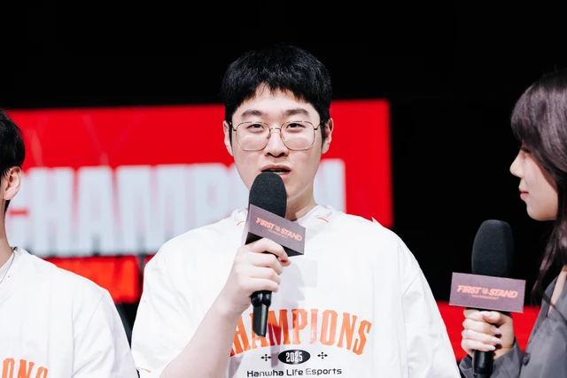
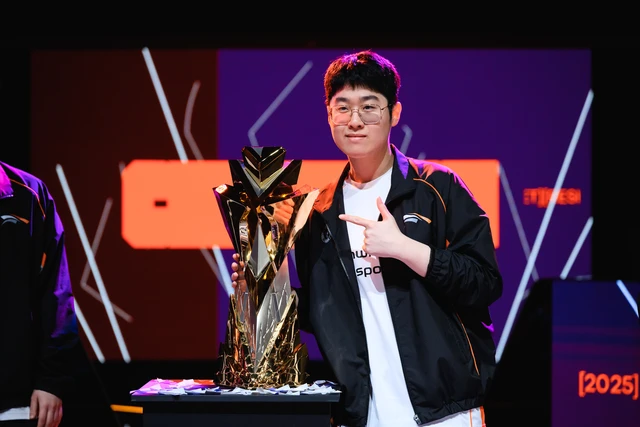

Hé lộ lịch tập "địa ngục", siêu sao BLG "gáy khét" sẽ ôm trọn danh hiệu LPL lẫn MSI
Zeus tỏ ra thực tế khi chia sẻ về Faker.
Zeus "tạt nước lạnh" vào kỳ vọng của fan khi chia sẻ cảm nghĩ về Faker
Sau chức vô địch First Stand 2025, những sự kỳ vọng về Zeus càng tăng cao. Bản thân Đường Trên của Hanwha Life Esports cũng chứng tỏ là khi không còn Faker cạnh bên, ít nhất ở hiện tại anh vẫn ổn và vẫn có thể giành thêm danh hiệu, kể cả ở quốc nội và quốc tế. Thậm chí, một số fan còn nhận định rằng, Zeus có thể vươn đến trở thành người kế thừa Faker, thậm chí là G.O.A.T của làng LMHT khi "Quỷ Vương" giải nghệ. Nhưng Zeus lại không nghĩ vậy.

Trong một phỏng vấn mới đây, có thể nói là Zeus đã chia sẻ thẳng thắn nhưng lại "tạt gáo nước lạnh" vào kỳ vọng của fan. Cụ thể, Zeus cho biết: "Tôi đã có một sự nghiệp tuyệt vời cho đến hiện tại. Tôi vẫn còn nhiều điều phải làm. Còn về việc "người kế nhiệm Faker", thú thật thì tôi không nghĩ mình có thể vượt qua được Faker. Tôi chỉ tập trung làm tốt nhất có thể ở mọi thời điểm".
Khẳng định của Zeus về Faker và kỳ vọng của khán giả "tuy phũ nhưng thật"
Chia sẻ của Zeus lại vô cùng thực tế, khi rõ ràng so với sự nghiệp vĩ đại và đồ sộ của Faker, Zeus chỉ mới có những bước đầu tiên. Thậm chí, nếu xét về tầm ảnh hưởng, có thể thấy rõ: T1 có thể chấp nhận chia tay bất kỳ tuyển thủ nào không còn muốn gắn bó với đội, nhưng sẽ luôn tìm mọi cách để giữ chân Faker.
Chưa kể, First Stand 2025 cũng chỉ là một giải đấu được xem là khởi động là chính, với thời gian và số đội quá ít. Chính vì vậy, nếu thực sự Zeus muốn trở thành một tượng đài của LMHT, hơn cả các danh hiệu, siêu sao sinh năm 2004 còn phải chứng tỏ tầm ảnh hưởng. Và với vấn đề đó, thì Zeus chưa thể thực hiện trong một sớm một chiều.